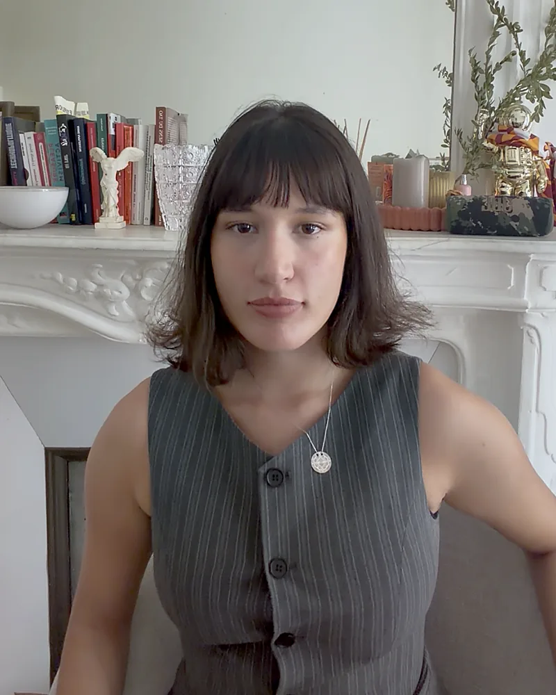

Psychologue clinicienne et psychothérapeute
Psychothérapie psychodynamique pour adultes et adolescents.
Séances en français, en anglais et en turc.

Approche
Des douleurs physiques, des sensations désagréables, de l'angoisse, beaucoup de stress : ce sont des symptômes, et un symptôme dit toujours quelque chose d'une souffrance.
La psychothérapie propose de regarder de plus près cette souffrance qui se manifeste en vous. Ensemble, nous cherchons à donner du sens au symptôme, à entendre ce qu'il tente de dire.
Ce travail ouvre sur la découverte de votre monde intérieur et sur la capacité de regarder en soi — ce qu'on appelle l'introspection.
C'est en jouant, et seulement en jouant, que l'individu, enfant ou adulte, est capable d'être créatif.
— D. W. Winnicott, Jeu et réalité
À propos
J'ai obtenu mon Master 2 de Psychologie Clinique Psychanalytique à l'Université Lumière Lyon 2. J'exerce aujourd'hui comme psychologue clinicienne auprès d'adultes et d'adolescents.
Formée dans la tradition psychanalytique, j'ai peu à peu intégré d'autres courants à ma pratique : la thérapie existentielle, qui prend au sérieux la condition de l'humain moderne — la solitude, l'isolement, l'absence de sens, l'angoisse de mort ; le travail sur le corps et le système nerveux, à travers les formations que j'ai suivies ; la pleine conscience et la méditation, une manière de relier le corps et l'esprit.
Il s'agit de découvrir votre monde intérieur dans sa singularité et sa subjectivité : comprendre comment vous vous représentez le monde, les relations, votre rapport à la souffrance. Ensemble, nous cherchons à donner du sens — et parfois à déconstruire ce qui demande à l'être.
5+
Années d'expérience
M2
Psychologie Clinique Psychanalytique
Paris
Consultations en ligne (pour le moment)
Parcours
Mon expérience s'est nourrie de différentes formes de souffrance dans la relation humaine : les services sociaux, la pédopsychiatrie, et aujourd'hui les suivis individuels.
2025 — Présent
Pédopsychiatrie — Paris & Poissy
Accompagnement thérapeutique d'enfants et d'adolescents en pédopsychiatrie. Entretiens individuels, évaluations cliniques, et participation aux réunions pluridisciplinaires.
2023 — Présent
İnka Psikoloji (Turquie & France)
Psychothérapie psychodynamique en ligne pour adultes turcophones. Accompagnement des souffrances liées à l'anxiété, la dépression, et les questions identitaires.
2024 — 2025
Services sociaux — Paris
Accompagnement psychologique de mineurs et de familles en difficulté, dans le cadre des services sociaux et de la protection de l'enfance.
Publications
Contribuer à la diffusion de la pensée psychanalytique, en français et en turc.
Titre original (turc) : « Psikanalizde Narsistik Çözümleme » — Onto Dergisi, 2024
Titre original (turc) : « Melanie Klein: Hayatı ve Çalışmaları » — Psikolektif
Titre original (turc) : « Tekrar Bir Araya Gelebilmek için Birleşmek » — Psikolektif Dergisi, n°21
Titre original (turc) : « Duygusal Yaralardan Bedensel Duyumlara Bir Yolculuk: Bağımlılık » — Psikolektif
Traduction du séminaire « Oyun ve Simgeleştirme » (Jeu et Symbolisation) du psychanalyste René Roussillon, organisé par Psike İstanbul.
Traduction d'un article pour le dossier « Bağımlılıklar – 1 » (Les dépendances – 1) de la revue Yansıtma — Psikopatoloji ve Projektif Testler, n° 35, juillet 2021.
Contact
La première étape est souvent la plus difficile. Je vous invite à me contacter pour un premier entretien clinique, qui me permettra de mieux comprendre votre demande. Comme les séances suivantes, ce premier entretien n'est pas gratuit.
Paris, Île-de-France
Séances actuellement proposées en ligne uniquement
Français · English · Türkçe
Séances dans l'une de ces trois langues
psyzeynepbuyukkeser@gmail.com
Réponse sous 48h
Suivez mon actualité professionnelle